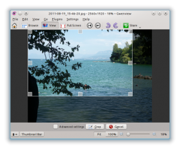
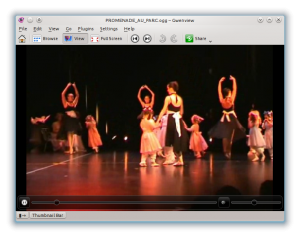

pub_date: 2012-01-27 21:00:00 +01:00
public: yes
tags: ["Gwenview","KDE"]
title: "What's new in Gwenview from KDE 4.8"
Now that KDE 4.8 has been released, it's time to recap all changes you will find in Gwenview.
The main change is the addition of animations when viewing images: crossfading between images and nicer-to-use comparisons. You can learn more from this previous blog article.
This change was not nice for users of some graphic cards whose OpenGL drivers do not support what Gwenview tries to do. I decided to play it safe for now: animations in Gwenview now use software rendering by default. For better performance, you can enable OpenGL rendering in the configuration dialog.
This new version of Gwenview also comes with a lot of smaller changes, some of them caused by the limitations which were introduced by the new animation system.
Scrolling and Zooming
- No more scrollbars: A bird-eye view lets you scroll the image.

- Nicer zoom cursor. I realized Qt now supports truecolor cursors, so I drew a nicer magnifying glass cursor instead of the black+white+1bit-alpha-channel version. Holding down Ctrl to zoom won't bring you back to the 90s anymore!
- Pressing 'F' toggles zoom-to-fit on and off.
- More consistent behavior: SVG images can now be scrolled using the same shortcuts as scrolling raster images.
Global User interface changes
- The "sidebar collapser", the little arrow on the left of the view which let you hide the sidebar is gone. It has been replaced by a button in the statusbar.
- Labels for some of the toolbar buttons have been removed, reducing its width. It should now be more usable on small netbook-like screens.
Tools
- The red-eye reduction and crop tools no longer show floating widgets over the image, a thin bar slides from the bottom of the window instead. 
Behavior
- Compared images follow thumbnail view order: previously when one selected two or more images to compare them, they would not necessarily appear in the same order as in the thumbnail bar.
- Arrow-key navigation in zoom-to-fit mode. This one has been requested by quite a few people. When an image is in zoom-to-fit mode, you can go to the previous and next image with the arrow keys. When you zoom in, arrow keys are used to scroll the image. This is very similar to the behavior provided by phones or digital cameras.
Video support
- The on-screen-display is now transparent. 
- One can use the left and right arrow keys to seek
- A late addition: an undocumented shortcut (P) to toggle playback
- Note that video support is a bit fishy right now: it seems Phonon does not always play well with its video widget being embedded in a QGraphicsView, known symptoms are wrong colors or wrong aspect ratio. Hopefully this will improve in the next releases.
4.8.1 should bring you its usual series of bug fixes, among them is generating thumbnails for all images of the current folder, not only the currently visible ones. This fix is a bit bigger than usual *.1 fixes, so testers are welcome: the code lives in Gwenview git repository, in the "gen-all-thumbnails" branch.
I hope you enjoy this new Gwenview!


{kind=link}
{kind=link}